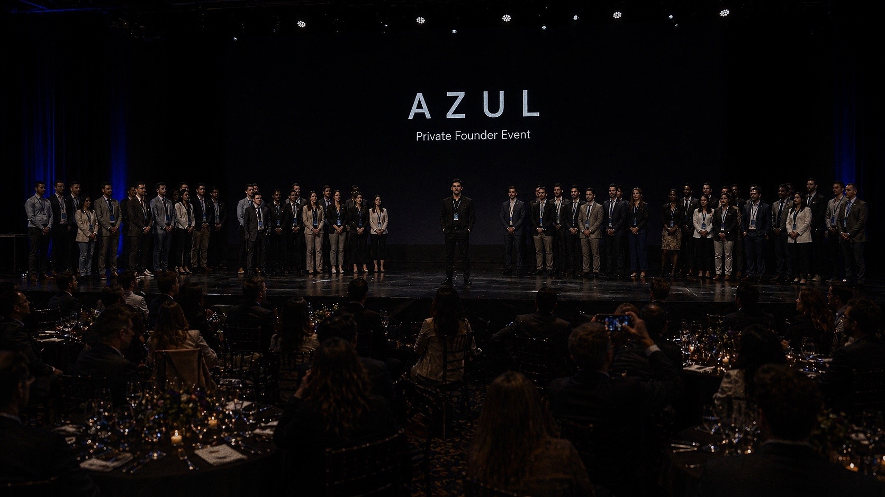

The room wasn’t loud — but it carried weight.
At the Azul Venture Partners private founder event, a curated group of companies gathered under one roof, representing a combined valuation of approximately $12.5 billion.
Founders, developers, venture capitalists, and investors moved through conversations that felt less like casual networking — and more like serious alignment around what the future of Miami’s innovation economy is becoming.
Teams ranging from six to fourteen people stood behind structured ideas, refined products, and clear execution paths. Yet what stood out most wasn’t only the scale of the room — it was the contrast.
Because among the final selections, one company broke the pattern entirely.

Final selection moment at Azul as top founders and teams were brought on stage. (Middle , Seaint Founder, Luis Altamirano)
Among the final selections, one presence stood out — a founder from Tennessee, an engineering team of one, selected into the final six to present as top developers, founders, venture capitalists, and investors lined up to assess the companies in the room.
In a room filled with full teams, millions in capital backing, and structured operations, his inclusion was not accidental. It was a recognition of clarity, intelligence, and execution.
While others leaned on scale, he stood on precision.
Building an entire software system independently, his presence reinforced a simple but powerful reality: leverage is no longer defined by team size — but by thinking.
The final six companies included:
- Seaint
- Coral
- Latitude Systems
- Elemental Labs
- Orai Technologies
- Mindora AI
Each brought a different angle — from infrastructure to AI systems to consumer platforms — but all shared one thing: they are actively building.
Events like Azul are becoming increasingly important in Miami’s evolution as a serious market for capital and innovation. Not because of scale alone, but because of the density of decision-makers in one place.
Investors weren’t there to observe — they were there to identify.
Founders weren’t there to pitch — they were there to prove.
And in that environment, outcomes shift quickly.
What made this event notable wasn’t just who was present — but what it represented:
A transition from Miami being seen as emerging… to being treated as a serious arena for high-level operators.
Moments like this don’t announce themselves loudly. They build quietly, inside rooms like these.
And then they compound.
Founder Interview
Founder Interview — Seaint
“I don’t believe in luck. I believe God put us here for a reason.
I always joke and say we are a team of three: me, my partner, and the Man who runs it all — God.
I’m thankful for my mom and brother, who showed me sacrifice; my little sister, who, even through having autism, has always carried a champion mentality; my partner in crime, Chelsie; and my mentor and partner.
Everyone has played a pivotal role in my life, but my mentor Cruz showed me what it looks like to be a true man of God — a leader, and a man who remains stoic even when everything is against him.
I am here because, when it felt like everyone left me out to dry, he took me in when many would have walked away. He is not one to back down. He has pushed me to surpass what I thought was humanly impossible, and somehow, it all ties back to faith.
Years ago, I would have been too scared to show up alone. But he helped me realize I belong — and that I am never alone when I have God.
I mess up a lot, and by no means am I where I want to be. But every time I feel like I am drowning, he has always been there to help pull me out. And if I told him that, he would say it was God — which only shows the kind of man he is.
One of a kind.
Soon, we will echo around the world. And it will all be thanks to God and the sacrifices we each made to get to this point.”
Event reference: Azul Venture Partners Private Founder Event